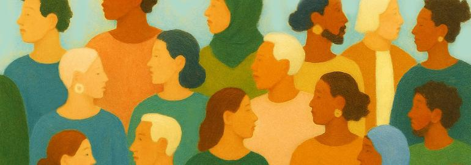

다문화국가 진입 초읽기에 들어간 대한민국
에디터
지난 2월 치러진 독일 연방의회 총선거는 기독민주당(CDU)·기독사회당(CSU) 연합의 승리로 막을 내렸습니다. 두 당은 도합 28.6%의 득표율을 기록해 전체 630개 의석 중 208석을 가져갔습니다. 이들이 정권을 되찾은 건 앙겔라 메르켈 전 총리가 물러난 2021년 12월 이후 약 3년 만입니다. 반대로 집권당이었던 사회민주당(SPD)은 초라해졌습니다. 16.4%(120석)를 얻어 제3당으로 전락했습니다. 득표율 기준 1949년 제헌의회 이후 최악의 성적입니다. 하지만 이번 독일 총선에서 눈여겨볼 대목은 따로 있습니다. 극우로 평가받는 독일을 위한 대안(AfD·이하 대안당)이 득표율 20.8％를 기록했다는 사실입니다. 이들이 얻은 의석은 전체 630석 가운데 152석. 이로써 AfD는 SPD를 제치고 제2당에 등극했습니다. 나치 역사에 대한 반성으로 극우주의를 경계해 온 독일에서 이례적인 결과라고 할 수 있습니다. 대안당은 2013년 남유럽 재정위기 당시 독일의 역할론에 반대하며 등장한 정당입니다. 남유럽 국가를 위한 구제금융에 독일인들의 세금이 쓰여선 안 된다는 게 이들의 핵심 구호였습니다. 이들이 처음 등장했을 때만 해도 독일 정가에선 대안당 돌풍이 오래 못 갈 것으로 전망했습니다. 반EU 정서는 남유럽 재정위기가 진정되면 사그라들 것으로 보았기 때문입니다. 그런데 2015년 유럽 전역에서 난민으로 인한 갈등이 고조되고, 설상가상으로 독일 쾰른에서 난민들에 의한 집단 성폭행 사건이 발생하며 대안당 지지율이 급등했습니다. 그 결과 대안당은 2017년 제19대 연방 총선에서 12.6%를 득표(94석)하여 제3당 지위에 올랐습니다. 이후에도 선거마다 승...
자세히보기
*본 주제에 대한 의견 바랍니다. 선정된 의견에 소정의 고료를 지급합니다.
정책제안기고
다문화 사회의 도전: 학교에서 시작하는 포용의 길
내가 근무하는 학교에는 중국, 캄보디아, 에티오피아, 카자흐스탄, 우즈베키스탄 등 다양한 국적의 학생들이 다닌다. 전체 재학 중의 20%가량이 다문화 학생이다. 우리나라 전체 학생의 3.5%는 다문화 학생이라는 통계도 있다. 이 비율이 앞으로 더욱 늘어날 것이라는 건 어려운 예상이...
김승현 인천 초등학교 교사

다문화 가정, 인류애로 바라보는 새로운 가족의 모습
2023년 통계청 자료에 따르면, 다문화 혼인은 전년 대비 17% 정도 증가했다고 발표되었습니다. 이 수치는 단순한 숫자를 넘어, 우리 사회에 깊게 뿌리내린 여러 역사적·경제적, 문화적 배경을 반영합니다. 1990년대부터 2000년대 초반까지 농촌의 남녀 성비 불균형으로 인해 국제...
김찬진 과천중학교 2학년 학생
다문화 사회를 밝혀줄 메시지, ‘괜찮아’.
2024년 11월 6일에 그가 돌아왔다. 전 세계에 환호와 공포를 모두 안겨준 미국의 옛 지도자 도널드 트럼프가 그것도 압도적 승리로 백악관의 옥좌에 앉게 되었다. 2020년의 패배를 설욕하는 거대한 승리가 어떻게 가능했냐는 분석이 쏟아지는 가운데, 많은 이들이 국경을 지목한다. ...
임명묵 작가·
다문화 없는 다문화 사회
“한국은 이미 다문화 사회의 문턱에 들어섰다.” 각종 보고서, 신문기사, 논문 등에서 흔히 만나는 표현이다. 외국인 인구가 260만 명을 넘어서고 총 인구비율이 5%에 육박했다는 설명과 함께 우리나라는 ‘다문화’ 사회로 칭해진다. ‘다문화’, ‘다문화가족’, ‘...
정회옥 명지대학교 정치외교학과 교수·저자